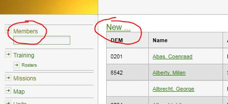
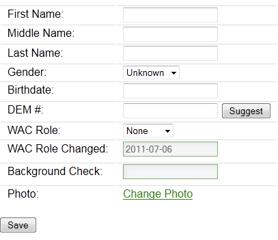
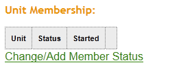
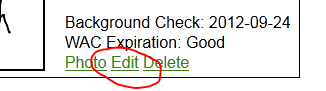

Create new member
Creating new members requires admin permissions.
Add new member to the database:
- In the left menu, click “Members”
- At the top of the list, click “New”

This should open a new window:

- Enter First, (Middle), Last names
- Enter Gender and Birthdate (birthday is not visible by most members)
- Enter DEM from county, or leave blank.
- Enter WAC role assigned by county.
- Set “WAC Role Changed” to the (approximate) date that KCSO issued the new member’s card
- (optional) Enter the date of KCSO’s successful background check on the member (this field is left over from when KCSO was using this database)
- Don’t click “Change Photo” yet – it’s a bug that the link is even there
- Click “Save”
You should now be looking at the details for the new member. You should now:
Mark the member as a member of your unit:

- Click “Change/Add Member Status”
- In the window that pops up, pick “Horse SAR” unit, status = “Active”, “Trainee”, etc as appropriate (these values are configurable to your unit, if you have other statuses you want to keep track of), and the most recent date that the member gained this status (ex: joined the unit)
- Click “Save”
Upload a portrait for the member:
- On the member details page, click “Photo”
- Click “Browse” and locate the photo file that’s been saved on your computer.
- Click Upload.
- If the image is the wrong shape, the server will cut the right shape out of the center of the picture. After doing so, it will ask you to confirm that the image is correct/good enough. Click the button to confirm.
Update member's WAC card type:
KCSO does not make changes to this database. The WAC card type (Novice,Support,Field) of a member is managed by his or her unit(s). Once the unit is notified that the member's card type has changed, the
membership admin should follow these steps:

- On the member details page, click "Edit"
- In the "WAC Role" field, pick the new card type for the member.
- The "WAC Role Changed" field is automatically updated when the field above is changed. If this date is not correct, type the correct date.
- Click "Save"